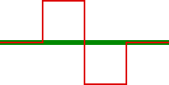
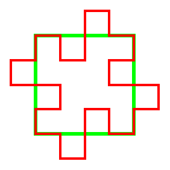

| We start with a square and make the same modifications to all sides. |
| Take a line segment the length of a side of the square and modify it with a sequence of smaller line segments, for example |
|  |
| This modified side is the top of the transformed square. |
| To complete the transformed square, copy and rotate the modified side 90 deg clockwise to make the right side, 180 deg clockwise to make the bottom, and 270 deg clockwise to make the left side. |
|  |
Return to Method 1.